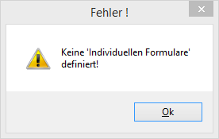
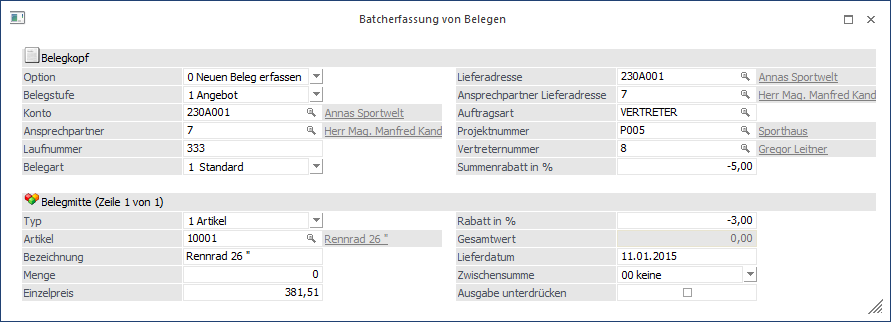
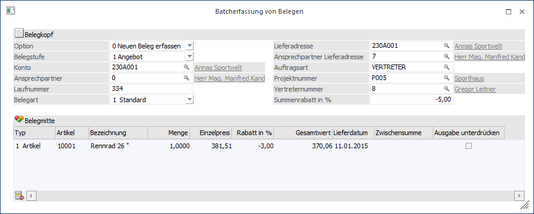
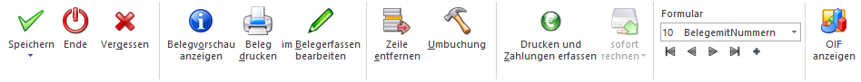
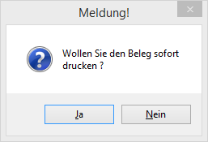

Über den Menüpunkt…
1 WinLine FAKT
1 Erfassen
1 Belegerfassung
1 Batcherfassung von Belegen
… können auf einfache Art und Weise Belege erfasst werden.
Hinweis
Voraussetzung für die Nutzung des Programm ist, dass im Programm "Vorlagen Anlage" (WinLine START - Vorlagen) zumindest eine individuelle Vorlage für das Belegerfassen angelegt wurde. Ist dieses nicht der Fall, wird eine entsprechende Hinweismeldung ausgegeben.

Ø Formular
Über die Auswahlbox "Formular" im Ribbon kann gewählt werden, in welcher Form die Belegerfassung stattfinden soll. Hierbei wird, neben dem Bereitstellen von unterschlichen Eingabefelder, vor allem die Art der Belegzeilenerfassung definiert. Die Erfassung der Belegzeilen kann über 2 Arten stattfinden:
ü Belegmitte nicht als Tabelle
ü Belegmitte als Tabelle
Hinweis
Die Definition der Formulare für die individuelle Gestaltung erfolgt im Programm WinLine START über den Menüpunkt "Vorlagen" - "Vorlagen Anlage".
Ø Option
Über das Feld "Option" im Bereich "Belegkopf" kann gesteuert werden, welche Art von Beleg erfasst werden soll. Dabei stehen folgende Möglichkeiten zur Verfügung:
ü 0 - Neuen Beleg erfassen
Mit
dieser Option können neue Beleg erfasst werden.
ü 1 - Lieferschein zu Auftrag
erfassen
Mit dieser Option können Aufträge aufgerufen und zu Lieferscheinen
weiterbearbeitet werden.
ü 2 - Rechnung zu Lieferschein
erfassen
Mit dieser Option können Lieferscheine aufgerufen und zu Rechnungen
weiterbearbeitet werden.
ü 3 - Bestehenden Beleg laden
Mit
dieser Option können bestehende Belege aufgerufen und überarbeitet werden.
Belegmitte nicht als Tabelle

Wenn die Belegmitte nicht als Tabelle dargestellt werden soll, dann wird im Bereich "Belegmitte" jeweils eine Erfassungszeile dargestellt. Mit Hilfe der VCR-Buttons kann zwischen den einzelnen Zeilen gewechselt bzw. neue Zeilen erfasst werden.
Belegmitte als Tabelle

Wenn die Belegmitte als Tabelle dargestellt werden soll, dann wird im Bereich "Belegmitte" eine Erfassungstabelle dargestellt.
Tabellenbuttons (nur bei Belegmitte als Tabelle)

Ø Zeilen entfernen
Durch Anwahl dieser Buttons können einzelne Belegzeilen gelöscht werden.
Ø Ausgabe Excel
Durch Anwahl des Buttons "Ausgabe Excel" wird der Inhalt der Tabelle nach Microsoft Excel übergeben.
Ø Tabelleneinstellungen speichern
Die Spalten einer Tabelle können grundsätzlich an beliebige Positionen verschoben, bzw. in der Breite entsprechend angepasst werden. Durch Anwahl des Buttons "Tabelleneinstellungen speichern" werden die Einstellungen benutzerspezifisch gespeichert und bei dem nächsten Aufruf des Programmpunktes wieder vorgeschlagen.
Ø Gesamteinstellungen speichern
Im Gegensatz zu "Tabelleneinstellungen speichern" können mit "Gesamteinstellungen speichern" mehrere Tabellenaufbauten gespeichert und nach Wunsch geladen werden. Zusätzlich werden Sonderfunktionen der Tabelle (z.B. "Spalte gruppieren") ebenfalls bei der Speicherung bedacht.
Buttons

Ø Speichern
Der Button "Speichern" bietet mehrere Auswahlmöglichkeiten, wobei folgende Optionen zur Verfügung stehen:
ü Speichern
Mit dieser Option
wird der erfasste Beleg nur gespeichert.
ü Drucken
Mit dieser Option wird
der Beleg gespeichert und gedruckt
ü Fragen
Mit dieser Option wird
ein eigenes Fenster geöffnet:

Ø Ende
Mit dem "Ende"-Button wird das Fenster geschlossen und alle getätigten Eingaben verworfen.
Ø Vergessen
Durch Anwahl des Buttons "Vergessen" bzw. der Taste F4 werden alle erfassten Werte gelöscht und das Fenster wird so angezeigt, wie es nach dem Aufruf des Menüpunktes ausgesehen hat. Alle vorgenommenen Änderungen werden dabei verworfen.
Ø Belegvorschau
Durch Anklicken des "Belegvorschau"-Buttons kann der Beleg in einer Belegvorschau angesehen werden. In dieser sind die Artikelpositionen auswählbar. Wird auf eine Artikelnummer geklickt, wird in die Belegerfassung der jeweilige Artikel aufgerufen bzw. ausgewählt und kann bearbeitet werden.
Ø Beleg drucken
Der bearbeitete Beleg wird gespeichert und gedruckt.
Ø im Belegerfassen bearbeiten
Der Beleg wird im Fenster "Belegerfassung" zur Bearbeitung geöffnet. Das Fenster "Batcherfassung von Belegen bleibt hierbei geöffnet, aber es werden die Eingaben des aktuellen Belegs verworfen.
Ø Zeile entfernen (nur bei Belegmitte ohne Tabelle)
Durch Anwahl dieser Buttons können einzelne Belegzeilen gelöscht werden.
Ø Umbuchung
Wurde ein Artikel erfasst und soll dieser umgebucht werden, wird mit dieser Schaltfläche eine neue Zeile mit negativem Betrag erzeugt. Hier kann nun eine neue Hauptartikelnummer eingetragen werden, die Chargennummer wird aus der ursprünglichen Zeile übernommen.
Beispiel
Es wird der Artikel "Rennrad 10018 mit Lagerort "K" (Klagenfurt)" erfasst. In der Menge wird die umzubuchende Menge eingegeben. Wird das Mengenfeld auf "0,00" gelassen, wird hier automatisch der derzeit aktuelle Lagerstand als Menge eingesetzt. Drückt man jetzt auf den Button "Umbuchung", wird automatisch eine neue Artikelzeile erzeugt, in der der "Hauptartikel" (d.h. "10018" in unserem Beispiel) sowie die oben eingegebene Menge mit umgekehrtem Vorzeichen eingeschossen wird. Es muss also nur mehr der Ziellagerort eingegeben werden (eigene Spalte in der Zeile).
Verfügt der Artikel außerdem auch noch über Chargen- oder Identnummern, wird diese Nummer automatisch in die neue Artikelzeile übernommen. Ist der Zielartikel im System noch nicht angelegt (weil die Chargennummer mit diesem Lagerort bisher noch nicht verwendet wurde) wird der Ausprägungsartikel automatisch vom System angelegt - unmerkbar für den Anwender. Voraussetzung dafür ist lediglich die Aktivierung der Option "Ausprägungen anlegen" im Erfassungs-Kopfteil.
Damit können interne Lagerumschichtungen von Paletten, Chargen oder Seriennummernartikeln sehr effizient und vereinfacht abgebildet werden, ohne auf die Fülle von Möglichkeiten verzichten zu müssen, die die Belegerfassung im Hintergrund anbietet (Folgeformulare, Etikettendruck, Kostenrechnung, FIBU-Buchungen lt. Belegart, Statistikinformationen, usw.!)
Ø Drucken und Zahlungen erfassen
Durch Anklicken dieses Buttons wird der Beleg gedruckt und im Anschluss daran können dann Zahlungen zu diesem Beleg erfasst werden.
Ø Hintergrunddruck
Der Button steht nur dann zur Verfügung, wenn das Fenster "Batcherfassung von Belegen" aus dem Belegzeilenkalender geöffnet wurde. Wenn dieser Button angewählt wird, können verschiedene Optionen gewählt werden, was mit dem Beleg beim Belegdruck passieren soll.
ü sofort rechnen
Der Druckt des
Belegs wird wie gewohnt direkt innerhalb der WinLine durchgeführt.
ü im Hintergrund verarbeiten
Bei
Auswahl dieser Option wird der Beleg im Hintergrund gedruckt, sofern der WinLine
Server gestartet und die WinLine verbunden ist. Nach der Übergabe an den WinLine
Server kann sofort weitergearbeitet werden.
ü für Hintergrundprozess
vorsehen
Durch Anwahl dieser Option wird der Beleg für den Hintergrunddruck
vorgesehen. Der Beleg wird nicht direkt gedruckt, sondern im Menüpunkt
"Hintergrundprozesse" abgestellt. Der Belegdruck kann anschließend zu einem
späteren Zeitpunkt aus dem eigenen Menüpunkt angestoßen werden.
Hinweis
Details dazu können dem Kapitel Hintergrunddruck entnommen werden.
Ø Formular
Über die Auswahlbox "Formular" kann gewählt werden, in welcher Form die Belegerfassung stattfinden soll.
Hinweis
Die Definition der Formulare für die individuelle Gestaltung erfolgt im Programm WinLine START über den Menüpunkt "Vorlagen" - "Vorlagen Anlage".
Ø VCR-Buttons (nur bei Belegmitte ohne Tabelle)
Über die so genannten VCR-Buttons kann zwischen den einzelnen Erfassungszeilen gewechselt bzw. neue Zeilen erfasst werden.
ü  Damit kann
der erste Datensatz angesprochen werden.
Damit kann
der erste Datensatz angesprochen werden.
ü  Damit kann
der vorherige Datensatz angesprochen werden.
Damit kann
der vorherige Datensatz angesprochen werden.
ü  Damit kann
der nächste Datensatz angesprochen werden.
Damit kann
der nächste Datensatz angesprochen werden.
ü  Damit kann
der letzte Datensatz angesprochen werden.
Damit kann
der letzte Datensatz angesprochen werden.
ü Damit wird die nächste freie Nummer für die Neuanlage gesucht.
Ø OIF anzeigen
Mit Hilfe dieses Buttons kann der OIF-Bereich im rechten Bereich des Fensters aktiviert bzw. deaktiviert werden.
Hinweis
Eine Aktivierung ist nur möglich, wenn in der Vorlage die Option "OIF anzeigen" aktiviert wurde.